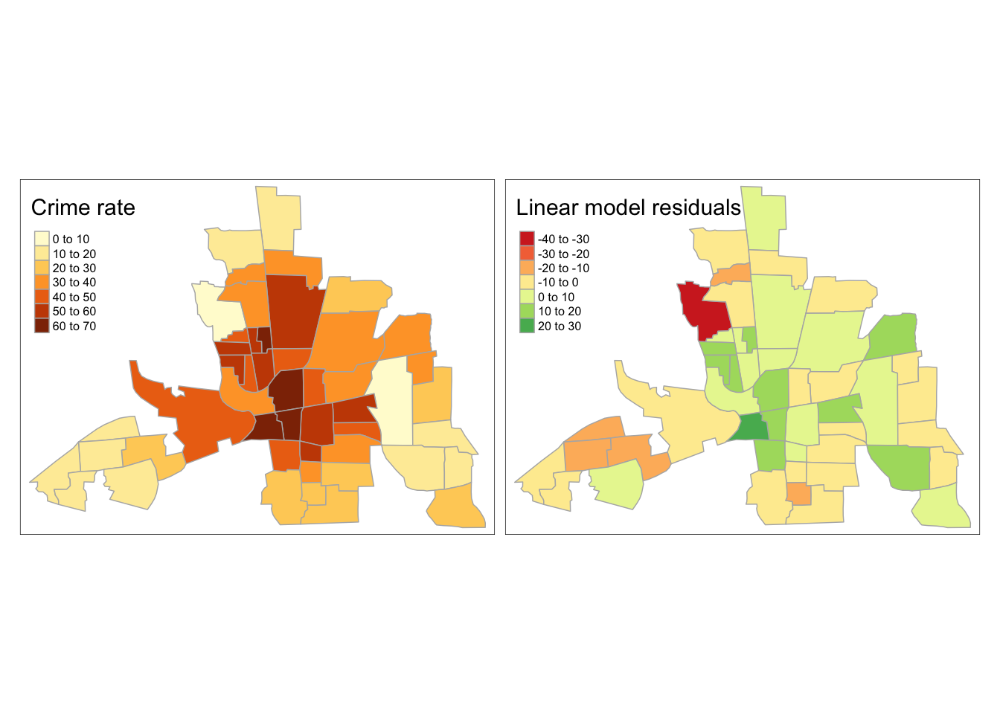
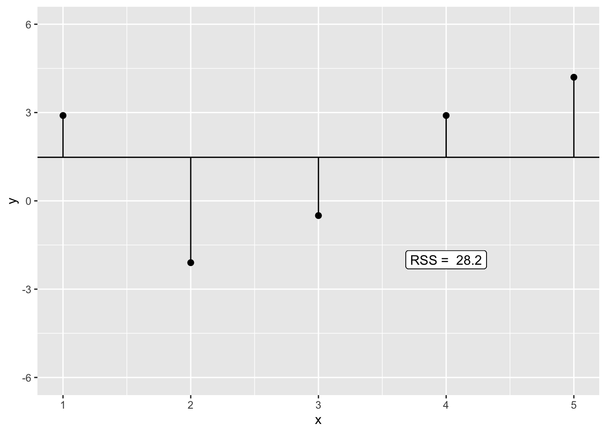
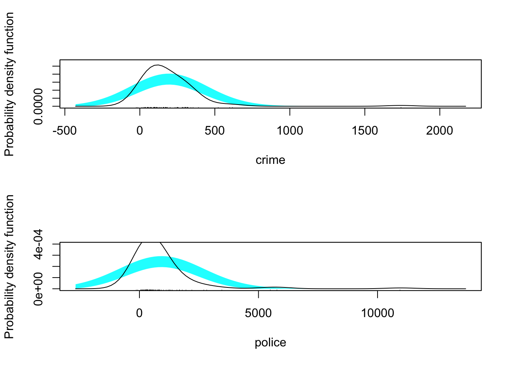
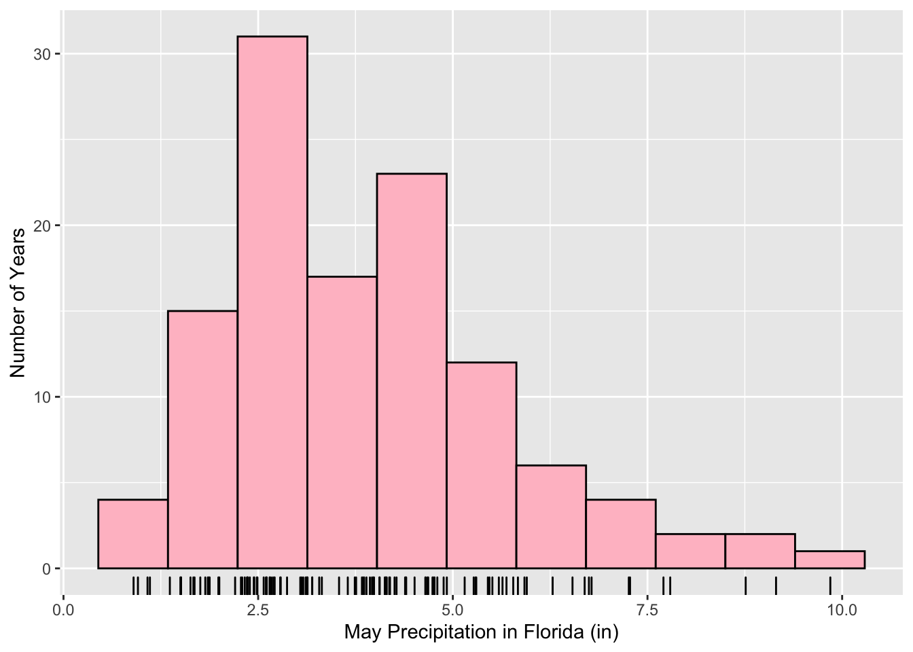

Tuesday, September 13, 2022
Note: Thursday I will be on travel. I will have Assignment #2 available on Canvas by Thursday morning.
Today
- Data visualization
Data visualization
Data visualization is one of the cornerstones of data science. It allows insights into your data that are not accessible by looking at a spreadsheet or data frame of values.
The {ggplot2} package provides functions to make plots efficiently. The functions are an application of the grammar of graphics theory (Leland Wilkinson) of data visualization.
At a basic level, graphics/plots/charts (all interchangeable terms) provide a way to explore the patterns in data; the presence of extreme values, distributions of individual variables, and relationships between groups of variables.
Graphs should emphasize the findings and insights you want your audience to understand. This requires a balance.
On one hand, you want to highlight as many interesting findings as possible. On the other hand, you don’t want to include too much information that it overwhelms the audience.
The grammar of graphics specifies how a plot translates data into attributes and geometric objects. - Attributes are things like location on along an axes, color, shape, and size. - Geometric objects are things like points, lines, bars, and polygons.
The type of plot depends on the geometric object, which is specified as a function.
Function names for geometric objects begin with geom_. For example, to create a scatter plot of points the geom_point() function is used.
Make the functions from the {ggplot2} package available in your current session.
library(ggplot2)Bar chart: A simple graph is the bar chart showing the number of cases within each group. Consider again the annual hurricane counts.
Import the data from the file on my website and print the first six rows.
loc <- "http://myweb.fsu.edu/jelsner/temp/data/US.txt"
LH.df <- readr::read_table(loc)##
## ── Column specification ────────────────────────────────────────────────────────
## cols(
## Year = col_double(),
## All = col_double(),
## MUS = col_double(),
## G = col_double(),
## FL = col_double(),
## E = col_double()
## )dplyr::glimpse(LH.df)## Rows: 166
## Columns: 6
## $ Year <dbl> 1851, 1852, 1853, 1854, 1855, 1856, 1857, 1858, 1859, 1860, 1861,…
## $ All <dbl> 1, 3, 0, 2, 1, 2, 1, 1, 1, 3, 2, 0, 0, 0, 2, 1, 1, 0, 4, 2, 3, 0,…
## $ MUS <dbl> 1, 1, 0, 1, 1, 1, 0, 0, 0, 1, 0, 0, 0, 0, 0, 0, 0, 0, 0, 0, 0, 0,…
## $ G <dbl> 0, 1, 0, 1, 1, 1, 0, 0, 1, 3, 0, 0, 0, 0, 1, 1, 1, 0, 2, 1, 0, 0,…
## $ FL <dbl> 1, 2, 0, 0, 0, 1, 0, 0, 0, 0, 0, 0, 0, 0, 1, 0, 0, 0, 0, 1, 2, 0,…
## $ E <dbl> 0, 0, 0, 1, 0, 0, 1, 1, 0, 0, 2, 0, 0, 0, 0, 0, 0, 0, 2, 0, 1, 0,…Recall that each case is a year and that the function table() returns the number of years for each landfall count.
table(LH.df$All)##
## 0 1 2 3 4 5 6 7
## 36 50 40 27 6 1 5 1The number of cases for each count is tallied and displayed below the count. There were 36 cases of 0 hurricanes.
The function geom_bar() creates a bar chart of this frequency table.
ggplot(data = LH.df) +
geom_bar(mapping = aes(x = All))
You begin a plot with the function ggplot() that creates a coordinate system that you add layers to. The first argument of ggplot() is the data frame to use in the graph. So ggplot(data = LH.df) creates an empty graph.
You complete the graph by adding one or more layers. The function geom_bar() adds a layer of bars to our plot, which creates a bar chart.
Each geom_ function takes a mapping argument. This defines how variables in our data frame are mapped to visual properties. The mapping argument is always paired with aes() function, and the x argument of aes() specifies which variables to map to the x axes, in this case All. ggplot() looks for the mapped variable in the data argument, in this case, LH.df.
The function geom_bar() tables the counts and then maps the number of cases to bars with the bar height proportional to the number of cases. Here the number of cases is the number of years with that many hurricanes.
The functions are applied in order (ggplot() comes before geom_bar()) and are linked with the addition + symbol. In this way you can think of the functions as layers in a GIS.
The bar chart contains the same information as displayed by the function table(). The y-axis label is ‘count’ and x-axis label is the column name.
Repeat this time using Florida hurricane counts. The annual number of Florida hurricanes by year is given in column FL in the data frame LH.df.
LH.df$FL## [1] 1 2 0 0 0 1 0 0 0 0 0 0 0 0 1 0 0 0 0 1 2 0 2 1 0 1 2 1 0 3 0 2 0 0 0 3 1
## [38] 2 0 0 0 0 1 2 0 3 1 1 1 0 1 0 1 0 0 2 0 0 1 1 1 0 0 0 1 2 1 0 1 0 1 0 0 2
## [75] 1 2 0 2 1 0 0 0 2 2 2 1 0 0 1 0 1 2 0 1 2 1 2 2 1 2 0 0 1 0 0 1 0 0 0 1 0
## [112] 0 0 3 1 2 1 1 0 0 0 1 0 0 1 0 0 0 1 0 0 0 0 0 2 0 1 0 1 0 0 1 0 0 2 0 0 2
## [149] 1 0 0 0 0 4 3 0 0 0 0 0 0 0 0 0 0 1The geom_bar() function tables these numbers and plots the frequency as a bar.
ggplot(data = LH.df) +
geom_bar(mapping = aes(x = FL)) +
xlab("Number of Florida Hurricanes (1851-2016)") +
ylab("Number of Years")
Here axes labels are placed on the plot with the functions ylab() and xlab(). With this type of ‘layering’ it’s easy to go from data on the web to a publishable plot.
Example: Pie preference. Thirty graduate students were surveyed about their favorite pie. Categories were (1) chocolate cream, (2) coconut custard, (3) georgia peach, and (4) strawberry.
To make a bar chart showing the number of students who choose each category first create a character vector and then change the vector to a data frame.
pie <- c(rep('chocolate cream', times = 4),
rep('coconut custard', times = 12),
rep('georgia peach', times = 5),
rep('strawberry', times = 9))
pie.df <- pie |>
as.data.frame()Use the function str() to see the data type in the data frame.
str(pie.df)## 'data.frame': 30 obs. of 1 variable:
## $ pie: chr "chocolate cream" "chocolate cream" "chocolate cream" "chocolate cream" ...There is a single variable in the data frame with the name pie. The variable is a character string.
Create a table.
table(pie.df$pie)##
## chocolate cream coconut custard georgia peach strawberry
## 4 12 5 9Create a bar chart and specify the axis labels.
ggplot(data = pie.df) +
geom_bar(mapping = aes(x = pie)) +
xlab("Pie Preference") +
ylab("Number of Students")
This is a start. Improvements should be made.
First, the bar order is alphabetical from left to right. This is the default ordering for character vectors. It is easier to make comparisons if frequency determines the order.
To change the order on the bar chart (1) convert the variable from character to factor with the as.factor() function then (2) specify the order of the factor levels based on frequency with the forcats::fct_infreq() function.
pie <- pie |>
factor() |>
forcats::fct_infreq()Make the table.
table(pie)## pie
## coconut custard strawberry georgia peach chocolate cream
## 12 9 5 4Now remake the bar chart.
pie.df <- pie |>
as.data.frame()ggplot(data = pie.df) +
geom_bar(mapping = aes(x = pie)) +
xlab("Pie Preference") +
ylab("Number of Students")
Second, the vertical axis tic labels are fractions. Since the bar heights are counts (integers) the tic labels also should be integers.
To override this default you add a new y-axis layer. The layer is the function scale_y_continuous() where you indicate the lower and upper limits of the axis with the concatenate (limits = c()) function. Now remake the bar chart.
ggplot(data = pie.df) +
geom_bar(mapping = aes(x = pie)) +
xlab("Beer Preference") +
ylab("Number of Students") +
scale_y_continuous(limits = c(0, 15))
Now the chart is publishable. Options exist for changing the look of the plot for digital media include, colors, orientation, background, etc.
For example to change the bar color use the fill = argument in the function geom_bar(). To change the orientation of the bars use the layer function coord_flip, and to change the background use the layer function theme_minimal(). You make changes to the look of the plot with additional layers.
ggplot(data = pie.df) +
geom_bar(mapping = aes(x = pie), fill = "blue") +
xlab("Pie Preference") +
ylab("Number of Students") +
scale_y_continuous(limits = c(0, 15)) +
coord_flip() +
theme_minimal()
Note that the fill = is used on the variable named in the aes() function but it is specified outside the aes() function.
Available colors include
colors()Example: Consider storm intensity of tropical cyclones during 2017. First create two vectors one numeric containing the minimum pressures (millibars) and the other character containing the storm names.
minP <- c(990, 1007, 992, 1007, 1005,
981, 967, 938, 914, 938,
972, 971)
name <- c("Arlene", "Bret", "Cindy", "Don", "Emily",
"Franklin", "Gert", "Harvey", "Irma", "Jose",
"Katia", "Lee")The function reorder() takes a character vector as the first argument and returns an ordered factor with the order dictated by the numeric values in the second argument.
name <- name |>
reorder(minP)The vector name is in alphabetically order but the factor levels indicate the order of storms from lowest pressure (Irma) to highest pressure (Don).
Using the mutate() function you can add a column to a data frame where the column is an ordered factor.
Note that it is the difference in pressure (deltaP for short) between the air outside the tropical cyclone and the air in the center that causes the winds. Cyclones with a large pressure difference are stronger in terms of their wind speed.
Typically the air outside is about 1014 mb so you compute deltaP and then reorder the tropical cyclone names using this computed variable.
df <- data.frame(name, minP) |>
dplyr::mutate(deltaP = 1014 - minP,
nameOrderedFactor = reorder(name, deltaP))Finally you plot the bar chart. Since there is no tabulation of the values you use geom_col() instead of geom_bar().
ggplot(data = df) +
geom_col(mapping = aes(x = nameOrderedFactor, y = deltaP)) +
ylab("Pressure Difference [mb]") +
xlab("Atlantic Tropical Cyclones of 2017") +
coord_flip()
Note: geom_bar() plots a bar chart AFTER tabulating a column. geom_col() plots a bar chart on a pre-tabulated column.
Let’s return to the weather data from Tallahassee.
df <- readr::read_csv(file = here::here("data", "TLH_SOD1892.csv")) |>
dplyr::filter(STATION == "USW00093805") |>
dplyr::mutate(Year = lubridate::year(DATE),
Month = lubridate::month(DATE)) |>
dplyr::filter(Year >= 1980 & Month == 9) |>
dplyr::group_by(Year) |>
dplyr::summarize(TotalPrecip = sum(PRCP)) |>
dplyr::mutate(Year = reorder(as.factor(Year), TotalPrecip))## Rows: 47056 Columns: 13
## ── Column specification ────────────────────────────────────────────────────────
## Delimiter: ","
## chr (2): STATION, NAME
## dbl (10): LATITUDE, LONGITUDE, ELEVATION, PRCP, TAVG, TMAX, TMIN, WDF1, WSF...
## date (1): DATE
##
## ℹ Use `spec()` to retrieve the full column specification for this data.
## ℹ Specify the column types or set `show_col_types = FALSE` to quiet this message.ggplot(data = df) +
geom_col(mapping = aes(x = Year, y = TotalPrecip)) +
ylab("September Rainfall [in]") +
coord_flip()
The histogram is similar to the bar chart except it uses bars to indicate frequency (or proportion) over an interval of continuous values. For instance, with continuous values the function table() is not useful.
x <- rnorm(n = 10)
table(x)## x
## -1.72997322813299 -1.44233520533782 -1.27188308565571 -0.318974101356036
## 1 1 1 1
## 0.0230819494443266 0.106415937428852 0.792014416232221 0.882357403357153
## 1 1 1 1
## 2.12217395374915 2.60569635343016
## 1 1So neither is a bar plot.
A histogram is made as follows: First a collection of disjoint intervals, called bins, covering the range of data points is chosen. “Disjoint” means no overlap, so the intervals look like (a,b] or [a,b). The interval (a,b] means the interval contains all the values from a to b including b but not a, whereas the interval [a,b) means the interval contains all the values from a to b including a but not b.
Second, the number of data values in each of these intervals is counted. Third, a bar is drawn above the interval so that the area of the bar is proportional to the frequency. If the intervals defining the bins have the same width, then the height of the bar is proportional to the frequency (the number of values inside the interval).
Let’s return to the Florida precipitation data.
loc <- "http://myweb.fsu.edu/jelsner/temp/data/FLprecip.txt"
FLp.df <- readr::read_table(loc)##
## ── Column specification ────────────────────────────────────────────────────────
## cols(
## Year = col_double(),
## Jan = col_double(),
## Feb = col_double(),
## Mar = col_double(),
## Apr = col_double(),
## May = col_double(),
## Jun = col_double(),
## Jul = col_double(),
## Aug = col_double(),
## Sep = col_double(),
## Oct = col_double(),
## Nov = col_double(),
## Dec = col_double()
## )Recall that the columns in the data frame FLp.df are months (variables) and rows are years. Year is an integer (int) vector and the months are numeric (num) vectors. Create a histogram of May precipitation.
ggplot(data = FLp.df) +
geom_histogram(mapping = aes(x = May), col = "white") +
xlab("May Precipitation in Florida (in)") ## `stat_bin()` using `bins = 30`. Pick better value with `binwidth`.
By default the function geom_histogram() picks 30 bins. Since there are only 118 May values many of the bins have fewer than 5 values.
When making a histogram you need to vary the number of bins before deciding on a final plot. This can be done with the bins = or binwidth = argument. For example, the look of the histogram is improved by halving the default number of bins.
ggplot(data = FLp.df) +
geom_histogram(mapping = aes(x = May),
col = "white",
bins = 15) +
xlab("May Precipitation in Florida (in)") 
It looks even better by decreasing the number of bins to 11.
ggplot(data = FLp.df) +
geom_histogram(mapping = aes(x = May),
col = "white",
bins = 11,
fill = "green3") +
xlab("May Precipitation in Florida (in)") +
ylab("Number of Years")
Here the fill = argument is used to change color and a ylab() layer is added to make the y-axis label more concise.
The geom_rug() layer adds the location of the data values as tic marks just above the horizontal axis. And the color = "white" is the color of the bin boundaries.
ggplot(data = FLp.df) +
geom_histogram(mapping = aes(x = May),
col = "white",
bins = 11,
fill = "green3") +
xlab("May Precipitation in Florida (in)") +
ylab("Number of Years") +
geom_rug(mapping = aes(x = May))
ggplot(data = FLp.df, mapping = aes(x = May)) +
geom_histogram(col = "black",
bins = 11,
fill = "pink") +
xlab("May Precipitation in Florida (in)") +
ylab("Number of Years") +
geom_rug()
Density plot
A density plot is a smoothed histogram with units of probability on the vertical axis. It’s motivated by the fact that for a continuous variable, the probability that the variable takes on any particular value is 0. Instead you need a range of values over which a probability is defined.
The probability density answers the question, what is the chance that a value falls in a small interval. This chance varies depending on where the value is located within the distribution of all values (e.g., near the middle of the distribution the chance is highest).
ggplot(data = FLp.df) +
geom_density(mapping = aes(x = May)) +
xlab("May Precipitation in Florida (in)") 
The vertical axis is the average chance that rainfall will take on a value along the horizontal axis within a given small interval. The size of the interval is determined by the bandwidth (bw =).
The values along the vertical axis depends on the data units. It can be tricky to interpret. Instead geom_freqpoly() produces a density-like graph where the units on the y-axis are counts as with the histogram.
ggplot(data = FLp.df, aes(x = May)) +
geom_freqpoly(color = "green3", binwidth = 1) +
xlab("May Precipitation in Florida (in)") +
geom_rug()
Box and whisker plot
The box plot graphs the summary statistics. These statistics include the minimum value, the maximum value, the 1st & 3rd quartile values, and the median value. The easiest way to create a box plot is to use the function boxplot().
boxplot(FLp.df$May)
The function boxplot() is from the base {graphics} package. It is not a {ggplot2} function. Others from this package include hist() for histograms and plot() for scatter plots.
The base graphics lets you manipulate details of a graph. For example:
boxplot(FLp.df$May,
ylab = "May Precipitation in FL (in)")
f <- fivenum(FLp.df$May)
text(rep(1.3, 5), f, labels = c("Minimum", "1st Quartile",
"Median", "3rd Quartile",
"Maximum"))
text(1.3, 7.792, labels = "Last Value Within\n 1.5xIQR Above 3rd Q")
The box plot illustrates the five numbers graphically. The median is the line through the box. The bottom and top of the box are the 1st and 3rd quartile values. Whiskers extend vertically from the box downward toward the minimum and upward toward the maximum.
If values extend beyond 1.5 times the interquartile range (either above or below the corresponding quartile) the whisker is truncated at the last value within the range and points are used to indicate outliers.
To make a box plot using the function ggplot() you need a dummy variable for the x argument in the function aes(). This is done with x = "".
ggplot(FLp.df) +
geom_boxplot(mapping = aes(x = "", y = May)) +
xlab("") +
ylab("May Precipitation in Florida (in)")
Suppose you want to show box plots for each month. In this case you make the x argument in the aes() function the name of a column containing the vector of month names.
You first turn the data frame from its native ‘wide’ format to a {ggplot2} friendly ‘long’ format.
Wide format data is called ‘wide’ because it typically has a lot of columns that stretch across the screen. Long format data is called ‘long’ because it has fewer columns while preserving all the information. In order to do have fewer columns, it has to be longer.
Wide format data are most common. They are convenient for data entry. They let you see more of the data at one time. For example, the FLp.df data frame.
head(FLp.df)## # A tibble: 6 × 13
## Year Jan Feb Mar Apr May Jun Jul Aug Sep Oct Nov Dec
## <dbl> <dbl> <dbl> <dbl> <dbl> <dbl> <dbl> <dbl> <dbl> <dbl> <dbl> <dbl> <dbl>
## 1 1895 3.28 3.24 2.50 4.53 4.25 4.5 7.45 6.10 4.67 3.09 2.65 1.59
## 2 1896 3.93 3.02 2.57 0.498 2.7 11.2 8.22 5.89 4.35 2.96 3.52 2.07
## 3 1897 1.84 6 2.12 4.39 2.28 5.22 7.21 6.83 11.1 4.10 1.75 2.68
## 4 1898 0.704 2.01 1.26 1.32 1.51 3.29 8.95 13.1 5.23 5.88 2.19 3.89
## 5 1899 4.52 5.92 1.90 3.40 1.11 5.80 9.26 6.71 5.13 5.88 0.751 1.94
## 6 1900 3.21 4.37 6.8 4.32 3.89 9.99 7.50 4.49 4.93 5.23 1.22 4.29The long data format is less familiar. It corresponds to the relational model for storing data used by most modern databases.
Use the pivot_longer() function from the {tidyr} package to turn the wide data frame into a long data frame. Let’s do it and then decipher what happens.
FLpL.df <- FLp.df |>
tidyr::pivot_longer(cols = -Year,
names_to = "Month",
values_to = "Precipitation")
str(FLpL.df)## tibble [1,404 × 3] (S3: tbl_df/tbl/data.frame)
## $ Year : num [1:1404] 1895 1895 1895 1895 1895 ...
## $ Month : chr [1:1404] "Jan" "Feb" "Mar" "Apr" ...
## $ Precipitation: num [1:1404] 3.28 3.24 2.5 4.53 4.25 ...Note that the column Month is a character vector. When making a plot using this variable the order will be alphabetical. So instead you change it to a factor vector with levels equal to the month abbreviations.
month.abb## [1] "Jan" "Feb" "Mar" "Apr" "May" "Jun" "Jul" "Aug" "Sep" "Oct" "Nov" "Dec"FLpL.df <- FLpL.df |>
dplyr::mutate(Month = factor(Month,
levels = month.abb))The pivot_longer() function takes all the columns to pivot into a longer format. Here chose them all EXCEPT the one named after the - sign (Year). All variables are measured (precipitation in units of inches) except Year.
The resulting long data frame has the Year variable in the first column and the remaining column names as the name variable in the second column.
You change the default name to Month by specifying the names_to = "Month" argument. The third column contains the corresponding precipitation values all in a single column names value.
You change the default value by specifying the values_to = "Precipitation".
Note that you reverse this with the pivot_wider() function.
FLpW.df <- FLpL.df |>
tidyr::pivot_wider(id_cols = Year,
names_from = Month,
values_from = Precipitation)This gif might help gif.
{kind=link}
Then to create the box plot specify that the x-axis be the key variable (here Month) and the y-axis to be the measured variable (here Precipitation).
ggplot(data = FLpL.df) +
geom_boxplot(mapping = aes(x = Month, y = Precipitation)) +
ylab("Precipitation (in)")
This is a graph widely used in climatology.
Each geom_ function is a layer. Data for the layer is specified in the function ggplot() with the data argument and with the mapping argument through the aes() function. To add another layer to the plot with different data you specify the data within the geom_ function. For example, lets repeat the climatology graph of monthly precipitation highlighting the month of May.
You add a geom_boxplot() layer and specify a subset of the data using the subset [] operator when specifying the data = argument.
ggplot(data = FLpL.df,
aes(x = Month, y = Precipitation)) +
geom_boxplot() +
ylab("Precipitation (in)") +
geom_boxplot(data = FLpL.df[FLpL.df$Month == "May", ],
aes(x = Month, y = Precipitation),
fill = "green")
Cheat sheets: https://www.rstudio.com/resources/cheatsheets/
Additional examples: https://moderndive.com/2-viz.html
Your turn: Create a histogram of March precipitation in Florida.